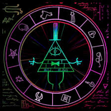
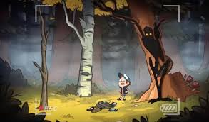
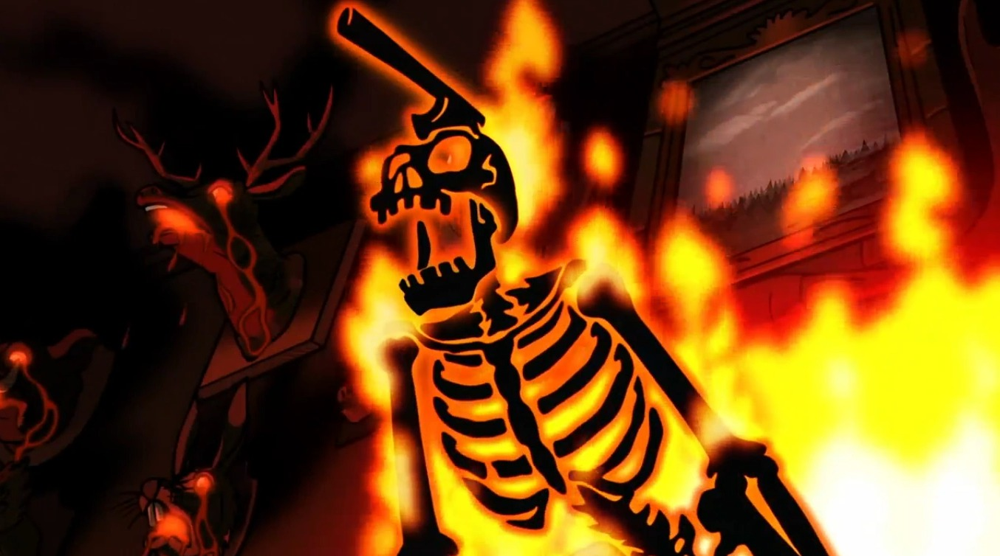

GRAVITY FALLS
| GRAVITY FALLS |
En sus vacaciones de verano, los gemelos Dipper y Mabel Pines, de doce años,
son llevados desde su hogar en Piedmont (California), a la ciudad ficticia de Gravity Falls, en el condado de Roadkill, Oregón, para poder pasar el verano con su tío abuelo Stan Pines que dirige una tienda para turistas llamada La Cabaña del Misterio. Donde las cosas no son lo que parecen en este pequeño pueblo, y con la ayuda de un diario
misterioso que Dipper encuentra en el bosque, comienzan a desentrañar los misterios cada día.
|
| ENTIDADES |
CARACTERÍSTICAS |
|  |
BILL CIPHER
Bill Clave (Bill Cipher en Estados Unidos y España) es el villano principal de la serie. Él es un demonio capaz de entrar en la mente y tomar el cuerpo de una persona, dejando la mente del poseído en el "Escape Mental", como si se tratare de un fantasma[1]. Puede ser invocado utilizando un encantamiento que se encuentra en el Diario 2[2]. En el episodio "Raromagedón 3: Recuperar El Pueblo", es "asesinado" por Stanley Pines con la ayuda de su hermano Stanford Pines. Stanley después de un tiempo de perder la memoria vuelve a la normalidad gracias a un tratamiento intensivo para recordar.
ALIADOS
- Bola 8
- Kryptos
- Xanthar
- Hectorgon
|
|  |
SIEMPRE DETRÁS
El Siempre Detrás (o El Sescondedetrás en España) es una misteriosa criatura que habita en el Bosque de Gravity Falls. Se caracteriza por estar siempre detrás de las personas y jamás ser visto.
Esta criatura se basa en el Hidebehind, una criatura del folclor Norteamericano.
El Siempre Detrás es la única criatura descrita en un diario que no posee una ilustración o fotografia de si mismo. En su lugar solo hay una silueta marcada con un signo de interrogación. Es posible que esto se deba a que el Autor no conocía su aspecto.
En Pottermore, se describe una criatura idéntica al Siempre Detrás (incluso en el nombre), lo que sugiere que existe la posibilidad que Harry Potter y Gravity Falls ocurren en un mismo universo (Alex Hirsch comentó ésta posibilidad en su twitter).
Stanford sugería que se podía tratar de un voyerista malnutrido que tiene miedo de hacer contacto visual.
|
|  |
ARCHIBALD CORDUROY
Hace 150 años, el hombre que se convertiría en este fantasma formaba parte de un equipo de leñadores encargados por la familia Noroeste de construir una gran mansión para ellos en la parte superior de una de las colinas de las afueras del asentamiento que es hoy la ciudad Gravity Falls, Oregón. Los Noroeste prometieron que cuando la mansión fuera completada, ellos tendrían una gran fiesta para la gente del pueblo todos los años. Tomó muchos años de duro trabajo y los sacrificios de muchos de la tripulación debido a la naturaleza peligrosa de su trabajo, pero al final se llevó a cabo el trabajo.
La noche en la que la fiesta se iba a llevar a cabo, sin embargo, los Noroeste se negaron a cumplir su promesa y cerraron sus puertas a la gente del pueblo. Mientras sus amigos y familiares caminaban de regreso desconsolados al pueblo , el leñador aporreó las puertas, exigiendo a los Noroeste que cumplieran su promesa. El tiempo de lluvia, combinada con la pérdida de los árboles, causó un alud de lodo y el leñador fue arrastrado.
Se las arregló para detener su caída por el acaparamiento de apoderarse de una gran roca, pero un hacha fue catapultada e impactó con su cabeza. Herido y débil, el leñador pronunció una maldición sobre toda la familia Noroeste, con su último aliento, jurando regresar en 150 años y vengarse de los Noroeste en caso de que todavía se nieguen a cumplir su promesa de permitir que la gente común asista a su fiesta anual.
|